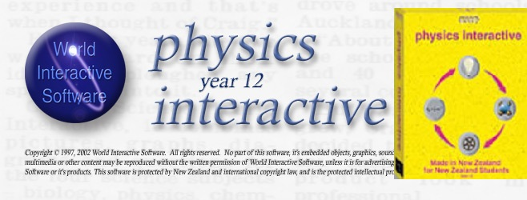

Publications & Scholarly Activity
This demonstrates sustained scholarly contribution across three distinct career phases:
- Microbiology Research (1991–1994): Peer-reviewed international journal publications in soil microbiology and symbiotic bacteria.
- Classroom Teaching Innovation (1999–2018): Extensive peer-reviewed conference presentations and professional journal publications in STEM education pedagogy.
- Teacher Education Leadership (2011–2018): Major curriculum development for tertiary STEM teacher education programs at a national level.
The body of work shows consistent engagement with peer review processes, recognition through competitive fellowships and national awards, and sustained impact on teaching and assessment practice at primary, secondary, and tertiary levels across all STEM disciplines.
Peer-Reviewed Research Journal Publications
Fenton, M., & Jarvis, B. D. W. (1991). Plasmid transfer in soil/plant environments. New Zealand Microbiological Society Newsletter, August.
Jarvis, B. D. W., & Fenton, M. (1994). Expression of the symbiotic plasmid from Rhizobium leguminosarum biovar trifolii in Sphingobacterium multivorum. Canadian Journal of Microbiology, 40, 873–879.
Rao, J. R., Fenton, M., & Jarvis, B. D. W. (1994). Symbiotic plasmid transfer in Rhizobium leguminosarum biovar trifolii and competition between the inoculant strain ICMP2163 and transconjugant soil bacteria. Soil Biology and Biochemistry, 26, 339–351.
Brown, T. J., Kelly, P. J., Ionas, G., Clarke, J. M., Fenton, M., & Pickering, M. (1994). Giardia and giardiasis in New Zealand. In R. C. A. Thompson, J. A. Reynoldson, & A. J. Lymbery (Eds.), Giardia: From molecules to disease (pp. 124–125). CAB International.
Jarvis, B. D. W., & Tighe, S. W. (1994). Rapid identification of Rhizobium species based on cellular fatty acid analysis. Plant and Soil, 161(2), 289–298.
Peer-Reviewed Government / Council Research Reports
Fenton, M. (2008). Authentic learning using mobile sensor technology with reflections on the state of science education in New Zealand [E-Learning Fellowship research report]. CORE Education Ltd. Ministry of Education. Link to report, RIGEL project and Casio-picaxe data logger
Fenton, M. (2008). Pedagogy and student involvement. In Energy conservation and renewable energy generation (EnviroPower) pilot – Completion report. Venture Taranaki Trust. Link to report.
Peer-Reviewed Conference Proceedings (Full Papers)
Fenton, M., & Fenton, C. (2016). Teachers' experiences of professional development in science and mathematics by distance learning. In Proceedings of the ULearn 2016 Conference. Rotorua, New Zealand.
Fenton, M. (2009). RIGEL - Learning from life: Communities of learning via a connected curriculum. In Proceedings of the Microsoft Partners in Learning Regional Innovative Teachers Conference. Kuala Lumpur, Malaysia.
Fenton, M. (2008). Interactive eLearning tools for mathematics, science and robotics: The RIGEL project. In Proceedings of the ULearn 2008 Conference. Christchurch, New Zealand.
Bishop, R., Ryan, C., Durdle, B., Fenton, C., & Fenton, M. (2006). An integrated monitoring, control and biochemical system to reduce the reliance of biological filtration in recirculation seawater aquaculture systems. In Proceedings of the World Aquaculture Society, Aqua 2006.
Fenton, C. D., Fenton, M., & Raynes, A. (2001). Microbiology misconceptions in secondary schools. In Proceedings of the New Zealand Microbiological Society Conference. Wellington, New Zealand.
Fenton, M., & Fenton, C. D. (1999). Light photomicroscopy using an internet webcam digital camera. In Proceedings of the New Zealand Microbiological Society Conference. Dunedin, New Zealand.
Peer-Reviewed Conference Proceedings (Workshop Papers)
Fenton, M. (2018). Beyond fair tests – Other investigation strategies to engage reluctant learners. In Proceedings of the New Zealand Association of Science Educators SciCon Conference. Christchurch, New Zealand.
Fenton, M. (2018). Inspiring tomorrow's scientists: Doing science through the digital technologies curriculum. In Proceedings of the New Zealand Association of Science Educators SciCon Conference. Christchurch, New Zealand.
Fenton, M. (2017). The digital technology curriculum: Inspiring the coders of tomorrow or yesterday? In Proceedings of the ULearn2017 Conference. Hamilton, New Zealand.
Fenton, M. (2017). Gamification and digital technologies for effective mathematics teaching. In Proceedings of the ULearn2017 Conference. Hamilton, New Zealand.
Fenton, M. (2017). Reclaiming the maker space for effective science teaching. In Proceedings of the ULearn2017 Conference. Hamilton, New Zealand.
Fenton, M. (2015). Primary mathematics teaching online: Rich tasks for cross-curricula learning. In Proceedings of the New Zealand Association of Mathematics Teachers Conference. Auckland, New Zealand.
Fenton, M. (2013). Students leading learning in science and mathematics at home or school: New uses for multimeters. In Proceedings of the ULearn13 Conference. Hamilton, New Zealand.
Winter, M., Anderson, D., Fenton, M., & Glasson, B. (2010). Supporting the primary science teacher fellows – Transforming primary science. In Proceedings of the New Zealand Association of Science Educators SciCon 2010 Conference. Nelson, New Zealand.
Fenton, M. (2007). Interactive ICT tools for mathematics, science and robotics – Getting the most from Game Maker. In Proceedings of the New Zealand Association of Mathematics Teachers Conference. Auckland, New Zealand.
Broad, J., & Fenton, M. (2001). Education under the microscope. In Proceedings of the New Zealand Microbiological Society Conference. Wellington, New Zealand.
Professional Journal Articles (Peer-Reviewed)
Fenton, M. (2011). Using a digital multi-meter as an inexpensive data-logger substitute. SCIOS, Science Teachers Association of Western Australia.
Fenton, M. (2010). Digital and dirty in maths and science. INTERFACE, 22.
Fenton, M. (2009). Teaching and the F-word: Fun. INTERFACE, 19(761).
Fenton, M. (2004). Bill Pickering, rocket scientist. The New Zealand Science Teachers Journal, Term 1.
Fenton, M., & Fenton, C. D. (2003). DNA and genetic engineering. The New Zealand Science Teachers Journal, 103.
Higher Degree by Research
Fenton, M. (1994). The expression in soil bacteria of the symbiotic genes from Rhizobium leguminosarum biovar trifolii [Master's thesis, Massey University]. Massey University Research Repository.
Invited Keynote Addresses
Fenton, M. (2016, July). From Galileo to LIGO: Reclaiming the maker space for science [Keynote address]. SciCon2016 Conference, Lower Hutt, New Zealand.
Fenton, M. (2014, July). Enlightenment and education: A journey through time and space [Keynote address]. Open Polytechnic Learning Conference, Wellington, New Zealand.
Major Curriculum Development and Educational Resources
Tertiary-Level Course Development (Lead Author/Designer)
Level 4 New Zealand Certificate in Electrical Trade – General Electrical. (2023-2025). EarnLearn.
New Zealand Board for Engineering Diplomas Assessment and Moderation Online Training Package. (2016).
Level 7 Graduate Diploma in Primary Mathematics Teaching. (2014–2016). The Open Polytechnic of New Zealand.
Level 7 Graduate Diploma in Primary Science Teaching. (2011–2012). The Open Polytechnic of New Zealand.
Level 5 Diploma in Information & Computer Technology. (2005). Western Institute of Technology at Taranaki.
Secondary-Level Course Development (Lead Author)
NZQA New Zealand Certificate in Study and Employment Pathways (Levels 3 and 4, 2022). Physical Sciences III and Physical Sciences IV.
NCEA Levels 1–3 course content and assessment materials. (2006–2010). Science, Physics, Calculus, Applied Mathematics, Biology, Chemistry, Games Design, Robotics/Coding.
Level 2 NCEA Physics Interactive CD-ROM. (2002). World Interactive Software, distributed by Roadshow Entertainment (NZ) Ltd.
Professional Memberships and Leadership Roles
Royal Society of New Zealand Professional member (MRSNZ); Current
Competence to undertake independent research practice.
Director, Focus Consultancy; 2016–Present
Education consultancy providing leadership, assessment design and moderation services to education providers, including curriculum design, quality assurance processes, and professional development for science and mathematics teachers throughout New Zealand.
Programme Leader (Science & Mathematics Teaching), Lecturer, Writer Open Polytechnic; 2011–2018
'Doing science to teach science" (and sister courses in mathematics). Practical hands-on pedagogy and resources to raise teacher confidence and knowledge of science and mathematics. Mentored and supervised in-service classroom teachers and principals to design, carry out and evaluate practice-led action research projects that have improved children’s’ learning outcomes throughout New Zealand. Former teacher students have secured leadership roles, Fellowships and a Prime Minister's Science Teacher prize.
Hutt Valley Primary Science Education Network (2012-2018) STEM Education expert and Workshop Facilitator, Programme Leader, Open Polytechnic
Launched by the Minister of Education, Hon. Hekia Perata. The PSEN includes local schools, industries and science organisations (e.g. GNS), organising annual events and providing expert-led workshops.
Royal Society of New Zealand Science Teaching Leadership Programme – Workshop Facilitator / Designer/ Teacher mentor
Mentor to teachers and principals implementing curriculum and assessment change as part of leadership awards.
Founder/Director, Nexus Research Group; 1997-2004, voluntary.
Established the Nexus Research Group, patron Dr Sir William Pickering, former head of JPL. New Zealand’s (and likely unique in the southern hemisphere) only school-based research laboratory. School students worked as technicians and researchers, with access to scientists world-wide, sharing original discoveries at conferences and on the NRG website.
Awards and Fellowships
2017 – Kiwibank New Zealander of the Year – Local Hero Medal (services to science education)
2015 – New Zealand Prime Minister's Education Excellence Award finalist (Excellence in Leading)
2014 – DEANZ Excellence Award, Distance Education Association of New Zealand (now FLANZ)
2008 – New Zealand Ministry of Education E-Learning Fellow: E-learning Fellowship launch | 2007 Press release
2008 – Microsoft New Zealand Partners in Learning Innovative Teacher
1991 – New Zealand Microbiology Society Postgraduate Prize
